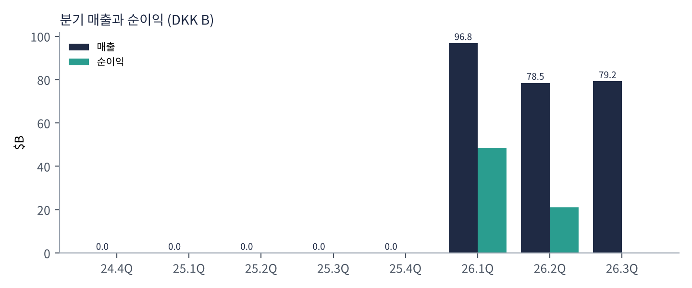
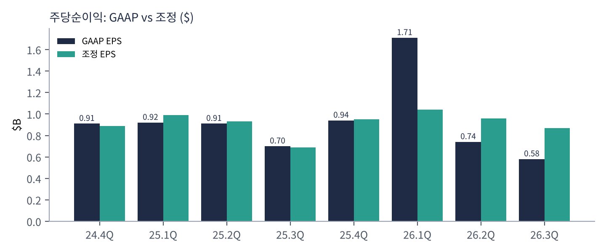
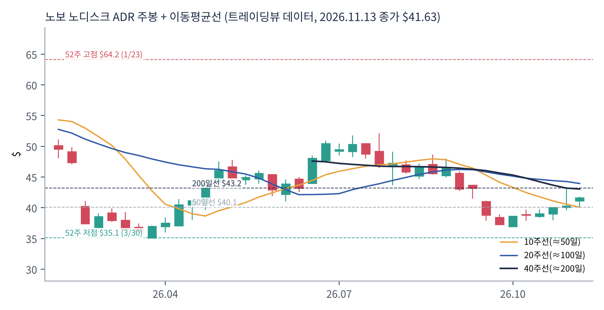
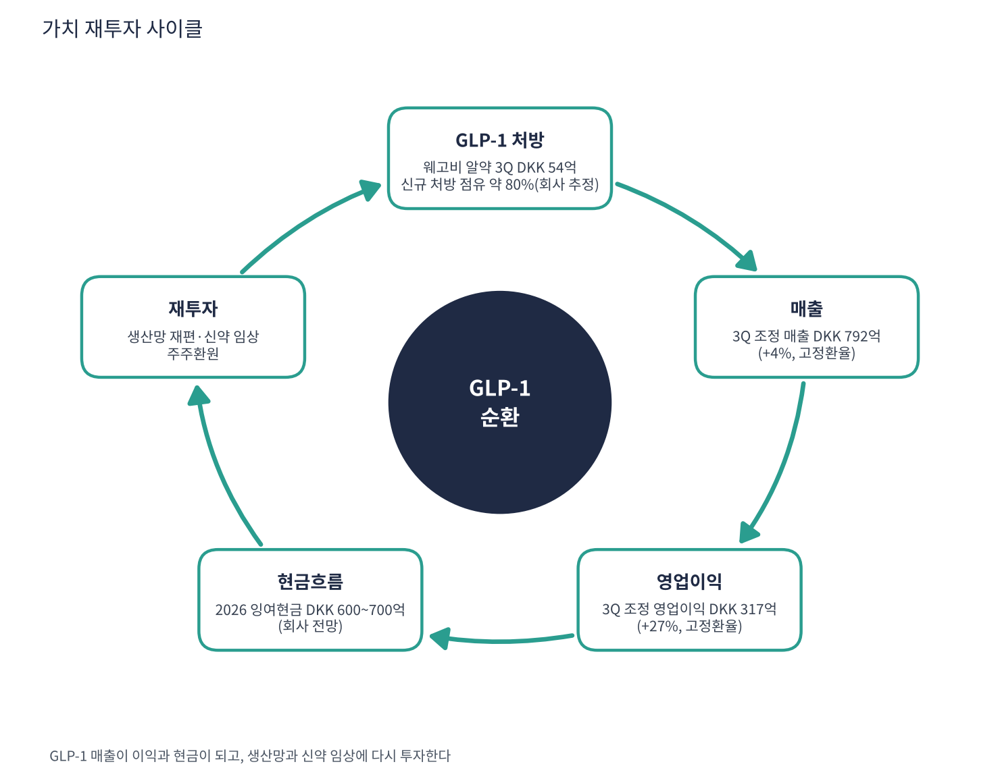

노보 노디스크는 덴마크 제약사로 위고비·오젬픽(GLP-1 비만·당뇨 치료제)과 인슐린이 주력이다. NYSE에는 ADR로 상장돼 있다. 위고비 알약 출시로 반등 조짐이 있지만 미국 주사제 가격 하락이 큰 회사다.
| 항목 | 내용 |
|---|---|
| 종목 | Novo Nordisk (NVO) · NYSE ADR · 비만·당뇨 · 덴마크 바그스베어 |
| 밸류에이션 | PER 10.5배 · P/S 3.46배 (11/13 종가 $41.63) |
| 최근 분기(3Q26) | 조정 매출 792억 DKK(고정환율 +4%), 조정 영업이익 317억 DKK(+27%) |
| 핵심 제품 | 위고비 알약 매출 54억 DKK(+53% QoQ, 신규 환자 약 80%) |
| 가이던스 | 2026 조정 매출 −2%~+2%(상향), 잉여현금흐름 600~700억 DKK |
| 현금·부채 | 스캐너: 현금 $70억, 차입금 $204억, TTM 잉여현금 $110억 |
| 직책 | 인물 | 역할·특징 |
|---|---|---|
| CEO | 마이크 두스타르 | 2025년 취임 후 구조조정·알약 출시를 이끎(보도) |
| 제품 | 위고비 알약 | 미국 출시, 신규 환자 비중 약 80%(회사) |
경영 스타일: '가격 하락을 물량과 신제품으로 상쇄'. 미국 위고비 주사제 가격이 30~35% 떨어지는 가운데 알약과 카그리세마로 성장 축을 옮기려 한다. 3분기에는 질병 치료제 후보와 제조시설 손상차손 87억 DKK를 반영했다(회사).
위고비 주사·알약, 카그리세마(2027년 초 미국 출시 계획)로 비만 치료제 라인을 넓힌다.
비만 치료를 심혈관·간 질환으로 넓히겠다는 방향이다.
다음 실적발표는 세 가지 질문에 답하는 자리다.
1. 영업이익 마진이 이번 분기에 개선되나?
2. 악재 '미국 가격 하락' 부담이 줄어드나?
3. 악재 '손상차손' 부담이 줄어드나?
한 줄 판정 규칙: 첫 질문의 영업이익 마진이 좋아지면 약한 고리가 풀리고, 그렇지 않으면 현재 사이클의 약점이 그대로 남는다.
일정: 다음 발표일은 확인 필요(이번 분기 발표 후 일정 미확정). 위 현재값은 이 보고서의 기존 숫자다.
| 분기 | 매출 (DKK) | 순이익 (DKK) | EPS (US$/ADS) | 조정 EPS (US$/ADS) | 특이 사항 |
|---|---|---|---|---|---|
| 2024.4Q | – | – | 0.91 | 0.89 | |
| 2025.1Q | – | – | 0.92 | 0.99 | |
| 2025.2Q | – | – | 0.91 | 0.93 | |
| 2025.3Q | – | – | 0.70 | 0.69 | |
| 2025.4Q | – | – | 0.94 | 0.95 | |
| 2026.1Q | 968억* | 486억* | 1.71 | 1.04 | 340B 환급 반영으로 GAAP 부풀려짐 |
| 2026.2Q | 785억 | 210억 | 0.74 | 0.96 | |
| 2026.3Q | 792억 | – | 0.58 | 0.87 | 조정 영업이익 317억 DKK(+27%), 상각 87억 DKK |


* 1~2분기 매출·순이익은 회사 보고 기준 근사이며 340B 프로그램 환급 반영분이 포함돼 부풀려져 있다(보도). 2024년 4분기~2025년 4분기 매출·순이익은 외국 발행사라 SEC 값을 구하지 못해 '미수집'이다. 3분기 순이익도 미수집. EPS 열은 트레이딩뷰 GAAP, 조정 EPS 열은 트레이딩뷰 Reported다.
흐름 요약: 조정 EPS는 $0.69~1.04 사이에서 움직이고 3분기 $0.87이다. 3분기 조정 영업이익은 +27%로 개선됐지만 매출은 +4%에 그쳐 마진 개선에 의존한다. 분기 설비투자는 구하지 못했다.
| 항목 | 3Q26 | 전분기 대비 | 비고 |
|---|---|---|---|
| 위고비 알약 | 54억 DKK | +53% | 신규 환자 약 80% |
| 위고비 주사(미국) | −13% | 가격 하락 30~35% | |
| 조정 매출 | 792억 DKK | +1% | 고정환율 +4% 전년 대비 |
알약이 성장 축으로 올라오는 중이다. 부문별 매출 비중(당뇨·비만, 지역별)은 이번에 구하지 못했다.
노보는 '비만 치료의 표준 제공자'로 남으려 한다.
| 축 | 최근 움직임 |
|---|---|
| 신제품 | 위고비 알약, 카그리세마 2027년 초 미국 출시 계획 |
| 비용 | 제조시설 손상차손 41억 DKK, 질병 치료 후보 손상 46억 DKK |
| 위험 | 미국 가격 압박, 경쟁사 LLY와의 점유율 |

| 이동평균 | 값 | 종가 대비 | 해석 |
|---|---|---|---|
| 5일선 | $41.09 | +1.3% | 현재가가 위 |
| 20일선 | $39.97 | +4.2% | 현재가가 위 |
| 50일선 | $40.09 | +3.8% | 현재가가 위 |
| 100일선 | $44.00 | -5.4% | 현재가가 아래 |
| 200일선 | $43.18 | -3.6% | 현재가가 아래 (-4%) |
주봉 흐름: 52주 고점 $64.2(2026.1.23)에서 하락해 2026.3.30 저점 $35.1을 찍고 $37~48 구간에서 횡보 중이다. 현재가 $41.6은 5·20·50일선 위, 100·200일선 아래다.
| 규칙 | 기준 | 현재 값 | 신호 |
|---|---|---|---|
| 장기 추세 필터 | 종가 vs 200일선 | $41.63 < $43.18 | 매도 |
| 중장기 교차 | 50일선 vs 200일선 | $40.09 < $43.18 | 매도 |
| 단기 교차 | 20일선 vs 50일선 | $39.97 < $40.09 | 매도 |
| 돈키언 채널 | 55일 고가 $48.00 / 저가 $36.84 | 중간값 $42.42 아래 | 매도 |
| 1개월 모멘텀 | 21거래일 수익률 | +6.1% (기준 $39.22) | 매수 |
| 3개월 모멘텀 | 63거래일 수익률 | -7.2% (기준 $44.88) | 매도 |
| 6개월 모멘텀 | 126거래일 수익률 | -7.0% (기준 $44.74) | 매도 |
| 12개월 모멘텀 | 252거래일 수익률 | -17.2% (기준 $50.26) | 매도 |
| 종합 (8개 평균) | -0.75 | 강한 매도 |
해석: 8개 신호 중 매수 1개, 매도 7개(점수 -0.75, 강한 매도)다. 14일 ATR $1.18 (2.8%).
| 가격·조건 | 무엇이 바뀌나 | 의미 |
|---|---|---|
| $43.18 돌파 | 200일선 | 매도 → 매수 |
| 50일선이 200일선 위로 | 50/200 교차 | 매도 → 매수 |
| 20일선이 50일선 위로 | 20/50 교차 | 매도 → 매수 |
| $42.42 돌파 | 돈키언 중간값 | 매도 → 매수 |
| $44.88 돌파 | 3개월 기준가 | 매도 → 매수 |
| $39.22 돌파 | 1개월 기준가 | 이탈하면 매수 → 매도 |
| 구분 | 가격대 | 근거 |
|---|---|---|
| 저항 1 | $43.2 ~ 44.0 | 200일선 $43.2, 100일선 $44.0 |
| 저항 2 | $48.0 | 55일 고점 |
| 지지 1 | $40.1 ~ 40.0 | 50일선 $40.1, 20일선 $40.0 |
| 지지 2 | $36.8 / $35.1 | 55일 저점 $36.8, 52주 저점 $35.1 |
점수는 −0.75로 매도 우위이나 가격은 단기선 위에 있다. 200일선($43.2)을 종가로 넘기 전까지는 반등 구간으로만 본다. 50일선 부근 눌림에서 소액 분할, 52주 저점($35.1) 종가 이탈 시 정리한다. 알약 매출 증가세가 확인 지점이다.
| 악재 요인 | 내용 | 강도 |
|---|---|---|
| 미국 가격 하락 | 위고비 주사 −13%, 가격 30~35% 하락 | 높음 |
| 손상차손 | 3Q 87억 DKK | 중간 |
| 성장 둔화 | 3Q 조정 매출 +4% | 중간 |
| 경쟁 | LLY가 점유율 확대 | 중간 |
| 티커 | 회사 | PER(TTM) | PEG | P/S | EPS 성장(YoY) |
|---|---|---|---|---|---|
| NVO | 노보 노디스크 | 10.5배 | – | 3.46배 | +16% |
| LLY | 일라이 릴리 | 47.4배 | 0.93 | 14.75배 | +51% |
| AZN | 아스트라제네카 | 26.4배 | 1.86 | 4.67배 | +13% |
| MRK | 머크 | 150.9배 | – | 5.42배 | -87% |
| PFE | 화이자 | 41.3배 | – | 2.61배 | -59% |
NVO의 PEG 0.65는 일회성 영향이라 첫 행에 '–'로 뒀다. 값은 스캐너 기준이다.
노보는 영업현금흐름이 크고 현금성 자산은 작다. 잉여현금흐름이 매년 $100억 이상이라 배당과 투자는 현금흐름으로 감당한다.
| 지표 | 값 | 계산·출처 | 해석 |
|---|---|---|---|
| 현금 | $70억 | 스캐너 | – |
| 총차입금 | $204억 | 스캐너 | 순부채 약 $134억(내 계산) |
| TTM 잉여현금흐름 | $110억 | 스캐너 | – |
| TTM EBITDA | $276억 | 스캐너 | 차입금/EBITDA 0.74배(내 계산) |
| 기준 | 값 | 비고 |
|---|---|---|
| P/S (TTM) | 3.46배 | 스캐너 |
| 동종 | LLY 14.75, AZN 4.67, PFE 2.61, MRK 5.42 | 11/13 스캐너 |
해석: P/S는 LLY의 4분의 1 수준이고 AZN보다 낮다. 가격 하락 폭이 매출에 반영돼 성장 기대가 낮다는 뜻으로 읽힌다.
| 지표 | 값 | 판정 |
|---|---|---|
| PER | 10.5배 | 동종 대비 낮음 |
| EV / EBITDA | 약 7.3배 | EV 약 $2,015억 ÷ $276억(내 계산) |
| EBITDA 마진 | 3Q 조정 영업이익률 약 40%(내 계산 317 ÷ 792) | 조정 영업이익 기준 |
| 방식 | PER | EPS 성장률 | PEG | 판정 |
|---|---|---|---|---|
| 트레이딩뷰 (GAAP TTM) | 10.5배 | +15.7% | 0.65 | 340B 환급 일회성으로 부풀려져 신뢰 낮음 |
| 조정 기준 | – | – | – | 조정 EPS가 최근 분기 감소·정체라 산출 불가 |
판정: PEG는 사용하지 않는다. 표의 0.65는 2026년 상반기 340B 환급이 EPS를 부풀린 결과다(보도). 조정 EPS 4분기 합이 증가세가 뚜렷하지 않아 별도 PEG를 만들지 않았다.

노보의 사이클은 알약·신제품 매출 → 영업이익 → 잉여현금흐름 → 연구·생산 재투자 → 다음 제품 출시다. 현금흐름이 크기 때문에 투자는 이어지지만 미국 가격 하락이 첫 고리를 약하게 한다.
| 고리 | 현재 숫자 | 고리 강도 | 약해지는 신호 |
|---|---|---|---|
| ① 알약·신제품 매출 | 알약 54억 DKK(+53% QoQ) | 강함 | 신규 환자 증가세 둔화 |
| ② 영업이익 마진 | 조정 영업이익 +27% | 보통 | 가격 하락 지속 |
| ③ 잉여현금흐름 | TTM $110억, 2026 전망 600~700억 DKK | 강함 | 전망 하향 |
| ④ 연구·생산 재투자 | 제조시설·카그리세마 | 보통 | 추가 손상차손 |
| ⑤ 배당·자사주 여력 | 현금흐름 기반 | 보통 | 실적 부진시 축소 |
구조: 현금 창출(③)은 강하다. 첫 고리의 가격 하락을 알약 물량이 얼마나 메우는지가 확인 지점이다.